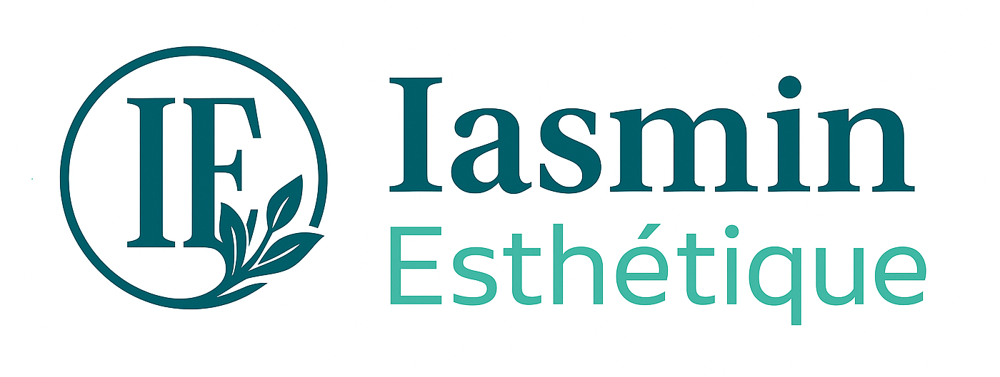

Création de sites web professionnels - Vaud, Suisse
Je conçois, développe et mets en ligne des sites web professionnels pour entrepreneurs et particuliers : thérapeutes, esthéticiennes, massothérapeutes, ostéopathes, peintres, fleuristes et autres activités.
Des sites simples et soignés pour présenter votre activité et faciliter la prise de contact.
Mise en ligne, SEO de base, présence Google (Google Business) et hébergement (Infomaniak) inclus.
Maintenance et support annuel disponibles en option. Tarifs accessibles adaptés aux besoins.
Site professionnel avec présentation des prestations, prise de contact via formulaire et WhatsApp et vente de bons cadeaux avec paiement en ligne. Une solution simple pour améliorer la visibilité et simplifier la relation client.
Voir le site
Site professionnel avec galerie d'œuvres, filtres et page de contact. L'artiste gère ses contenus en toute autonomie via une interface d'administration intuitive, sans dépendre d'un prestataire, et dispose d'une adresse e-mail professionnelle pour échanger avec ses clients. Le site intègre également une gestion multilingue (français et anglais).
Voir le site
Informaticien CFC (EPSIC)
Prix de Mérite – Economie Région Lausanne
Actuellement étudiant en cours d'emploi à la HEIG-VD
Filière : Informatique et systèmes de communication
Orientation : Sécurité informatique
4 ans d'expérience comme informaticien à l'EPFL
Projets entre CHF 850.- et 2'490.-, en fonction du niveau de personnalisation et des fonctionnalités.
Maintenance annuelle : CHF 200.- à 400.-